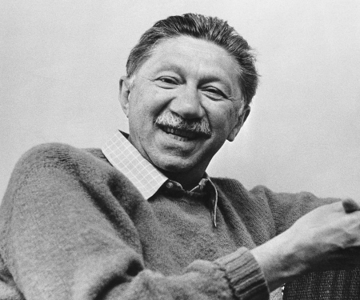
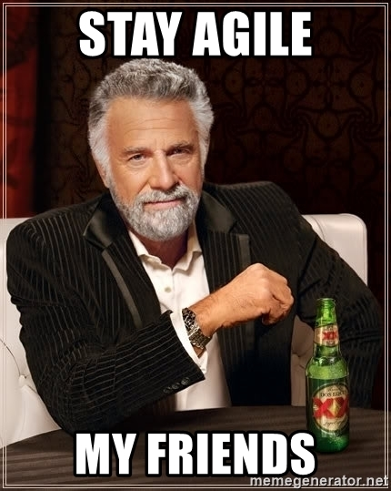
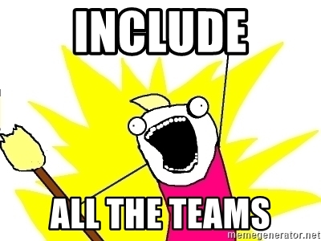
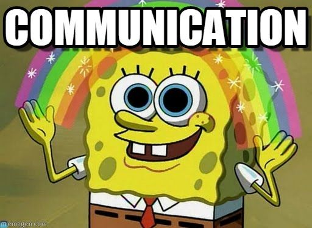
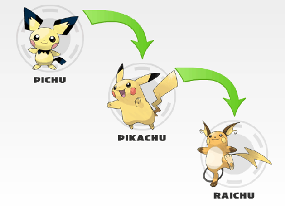
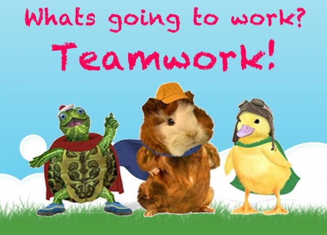
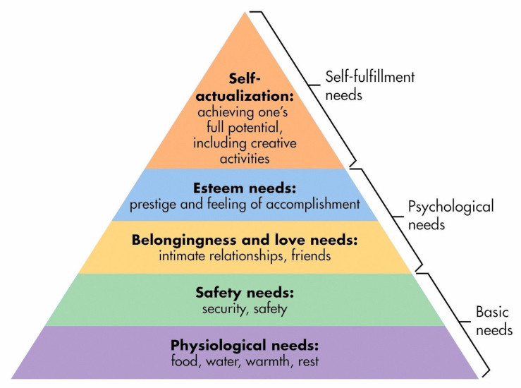
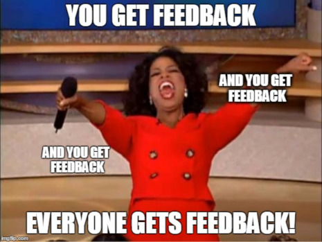
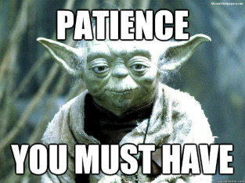

Using Maslow's Psychology to Build Your Best Team
DevConf.cz 2019
Micah Abbott - @rageear
Principal Quality Engineer - Red Hat
The Bad News
I am not a guru
My advice is not novel
There is no money-back guarantee
The Good News!
I've been in the "industry" for nearly 20 years!
I've seen (and been a part of) bad, good, and great teams!
I have a psychology degree!
Be Agile
The "Old Way"

Silos...silos everywhere!
Problems of the "Old Way"
Silos breed poor communication + lack of collaboration
Poor model for accountability; leads to "throwing code over the wall"
Not conducive to feedback or improvement
Interactions (when they happen) can be stressful
Agile: New Hotness
Encourages inclusivity + collaboration among teams
Agile: New Hotness
Relies on frequent communication!
Agile: New Hotness
Able to continuously improve and evolve!
Agile: New Hotness
Shared accountabilty means we succeed as a team
Enter Maslow's Hierarchy
Belongingness
Intimate relationships, friends...co-workers?
It is human nature to want to belong to a group
Groups are strengthened through relationships built over time
Stronger relationships result in more trust
More trust allows for honest, open (sometimes heated!) communication
Belongingness: Building Relationships
Best method for growing relationships through in-person interactions
Can be approximated with video calls
Don't forget your remote team members!
Interactions can (and should!) happen during and after work hours
At least one in-person meeting with entire team per year
Belongingness: Confidants + Champions
Find a confidant on your team that you trust
Allows you to share thoughts, ideas, opinions, gripes privately
Even better: find a champion
Supports + encourages your work, ideas, opinions
Esteem
Prestige and feeling of accomplishment
Everyone wants to feel like their contributions are important
How? Practice regular feedback!
Esteem: Regular Feedback
Show gratitude for things big and small
Celebrate achievements within the group and publicly
Give advice on how to improve
Be cautious not to criticize
Offer and accept apologies
All feedback must be done with respect
Unjust feedback can cause team members to withdraw
"Feedback is a gift"

Self-Actualization
Achieving one's full potential, including creative activities
Can you pursue self-actualization at work? Maybe...
Having strong, respectful relationships with team members can remove a source of worry
Unlocks potential to pursue creative goals or creative solutions
Allows you to attempt activities that aren't part of your job description
The Heirarchy in Practice
Time and patience
Relationships are not formed overnight
People progress at different pace
Allow strengths and weaknesses to be discovered
The Heirarchy in Practice
Frequent Interactions
Utilize Agile/Scrum activities: standups, retros, ad-hoc "open hours"
Interact during and after work hours
Go visit your office mates!
The Heirarchy in Practice
Lead By Example
Team leader(s) need to demonstrate some effort in applying these principles
Voluntary Participation
Not everyone will be interested in these activities
Do not exclude anyone
Continue to politely invite them to participate
Measuring Your Efforts
Difficult to objectively measure relationships + team cohesion
Consider questions like the following:
- Do you know more than the name of each team member and where they live?
- Do you have conversations about things other than work?
- Have you ever shared a drink or meal with your team?
- Can you have open disagreements respectfully, with no hurt feelings?
- Are you able to hold your team members accountable?
- Are you willing to help your team members achieve their goals?
- Is your team regularly delivering their milestones?
THANK YOU!